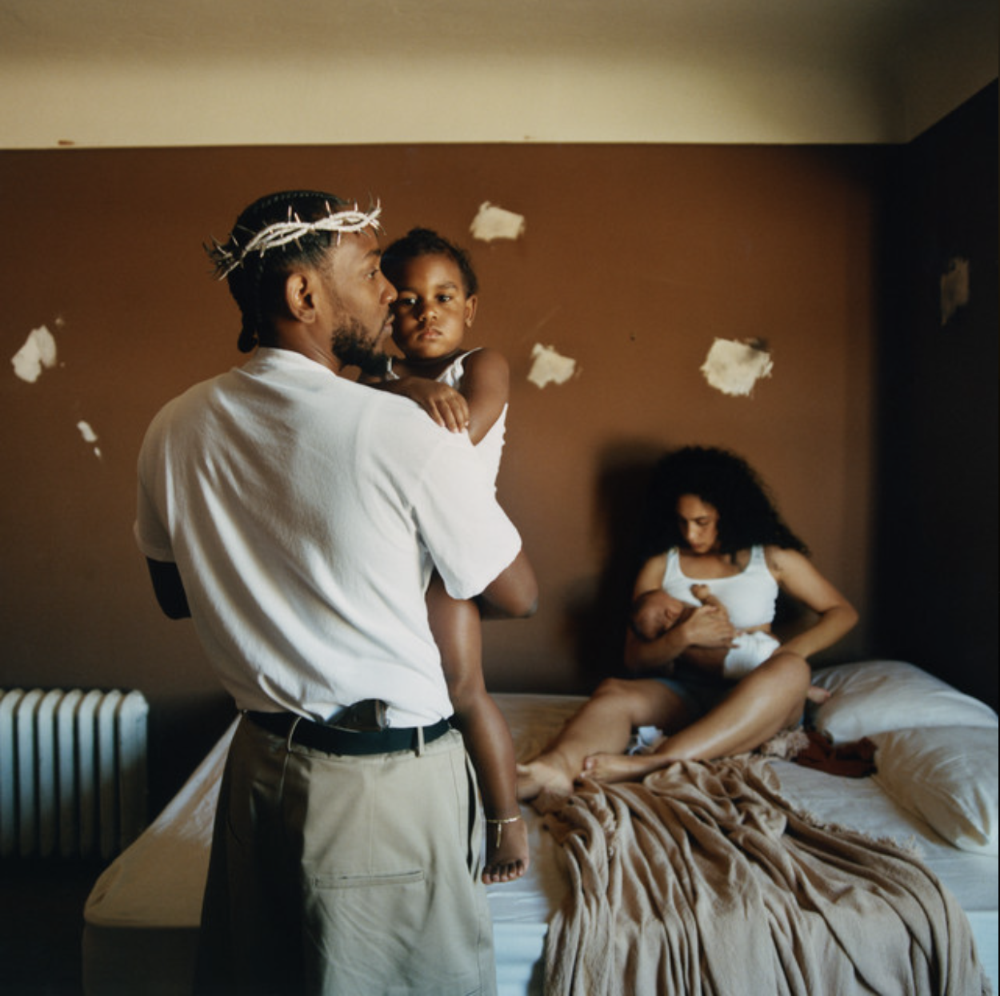

Music Video
I pop the pain away, I slide the pain away I pop the pain away, I slide the pain away I picked you up when you fell and cut your knee Told you not to cry and held you close to me I hope I'm not too late to set my demons straight I know I made you wait but how much can you take? I hope you see the God in me, I hope you can see And if it's up, stay down for me, yeah Shimmy, shimmy, cocoa puff Serafina, flame in us Where I'd be without your love? Rest your wings and trust, I feel you Deep (I know you feel), deep (know you feel) Deep (I know you feel), deep (too deep) Deep (I know you feel), deep (know you feel) Deep (I know you feel), deep Do you love me? Do you trust me? Can I trust you? Don't judge me I'ma die hard, it gets ugly Too passionate, it gets ugly (Mmm, ah-ah) I wonder where I lost my way? (Mmm, ah-ah) been waiting on your call all day Tell me, you in my corner right now? When I fall short, I'm leanin' on you to cry out We all got enough to lie about My truth too complicated to hide now Can I open up? Is it safe or not? I'm afraid a little, you relate or not? Have faith a little, I might take my time Ain't no savin' face this time I hope I'm not too late to set my demons straight I know I made you wait, but how much can you take? I hope you see the God in me, I hope you can see And if it's up, stay down for me, yeah Shimmy, shimmy, cocoa puff Serafina, flame in us Where I'd be without your love? Rest your wings and trust, I feel you Deep (I know you feel), deep (know you feel) Deep (I know you feel), deep (too deep) Deep (I know you feel), deep (know you feel) Deep (I know you feel), deep I got some regrets (I-I-I-I-I-I-I) But my past won't keep me from my best (I-I-I-I-I-I-I) Subtle mistakes felt like life or death (I-I-I-I-I-I-I) I wanna see the family stronger I wanna see the money longer You know that I'd die for you I get emotional about life The lost ones keepin' me up at night The world be reminding me it's danger I'll still risk it all for a stranger If I told you who I am, would you use it against me? Right or wrong, no stone, just love to send me I hope I'm not too late to set my demons straight I know I made you wait, but how much can you take? I hope you see the God in me, I hope you can see And if it's up, stay down for me, yeah Baby, you make me pray for London, yeah 'Cause if I won it all without you involved (fucking love you) I guess it's all for nothing